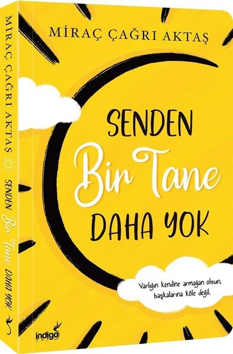

| Kitap Fotoğrafı | Kitap Yazarı | Kitap Adı | Kitabından Ufak bir alıntı | Kitap Türü | Yayın Tarihi | YayınEvi |
|---|---|---|---|---|---|---|
| Miraç Çağrı Aktaş | Kendine Hoşgeldin | Gidicek yerin yoksa Kendine Gel Bir an önce gel Sevmek nasıl olurmuş onlara Kendini severek göster | Kişisel Gelişim | 1 Temmuz 2019 | Olimpos | |
| Miraç Çağrı Aktaş | Kalbi İyi Olanın Yolu Zordur | Herkesi kendim gibi sanmanın verdiği zararı hiçbir şey vermedi bana | Kişisel Gelişim | 2 Ekim 2024 | Türk Kitabevi. | |
|  | Miraç Çağrı Aktaş | Senden Bir Tane Daha Yok | Birinin seninleyken artmış kalitesinin senden sonra düşmesi kadar keyiflendirici bir şey YOK | Kişisel Gelişim | 1 Aralık 2022 | Türk Kitabevi. |
| Miraç Çağrı Aktaş | Hayat Kaybettiğin Yerden Başlar | Kaybettik diye üzüldüğümüz insanların gidişleri aslında bizim kurtuluşumuz oluyor. Farkına çok sonradan varıyoruz | Kişisel Gelişim | 9 Nisan 2021 | Türk Kitabevi. | |
| Miraç Çağrı Aktaş | Yine de Sevdik | İnsan Sevmeye Başlayınca Yaşamaya Da Başlar | Kişisel Gelişim | 28 Şubat 2018 | Olimpos |